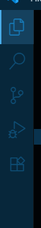
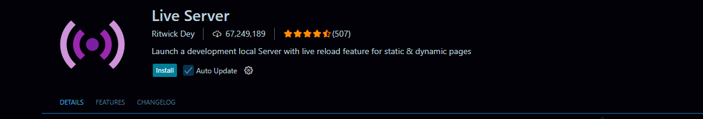

VS Code
What is VS code?
Visual Studio Code (VS Code) is a free, lightweight code editor that helps you write websites and programs. It works on Windows, Mac, and Linux. A very crucial feature is that it shows errors and suggestions while coding, and can run commands in a built-in terminal. You can will be using extensions like Live Server to see your website update in real time.
Installing VS code on Windows
To install VS code on your computer, perform the following tasks:
- Go to code.visualstudio.com
- Click Windows (User Installer)
-
Run the installer and:
- Accept the licence agreements
- Check "Add to PATH"
- Finish Installation
Installing VS code on MacOS
To install VS code on your Mac, perform the following tasks:
- Go to code.visualstudio.com
- Download the MacOS Universal version
- Open the .zip and drag Visual Studio Code into Your Applications folder
Installing VS code on Linux
To download VS code on Linux, you have to run a command based on the distro of linux you are using:
-
Debarian/Ubuntu (.deb)
bash
$ sudo apt install ./<downloaded-file>.deb -
Fedora (.fed)
bash
$ sudo rpm -i <downloaded-file>.rpm -
Snap Store (Any distro with Snap)
bash
$ sudo snap install code --classic
Live Server Extension
What is live server extension?
Live server extension is an extension that helps you instantly preview the output of your HTML code when you save it. The process for installing it is same for any OS.
Installing Live server Extension for VS Code
To download Live Server Extension on VS Code, you have to follow the steps given below:
1. Open the extensions tab by clicking the highlighted button on the sidebar showed among the five when you open VScode, or by using the shortcut Ctrl + Shift + X(Mac ⇧⌘X):
2. Write "live server" in the search bar and click the one shown in the image:

3. You'll see something like this:
4. Click the install button
5. The live server extension is installed!